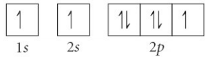
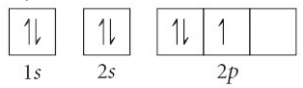
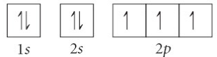
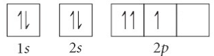
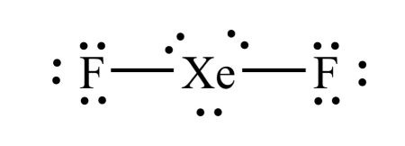
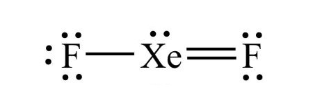
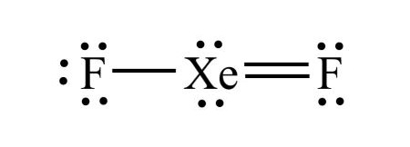
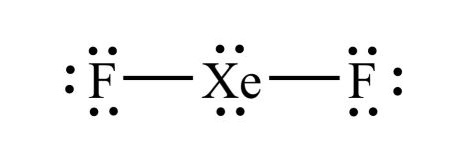
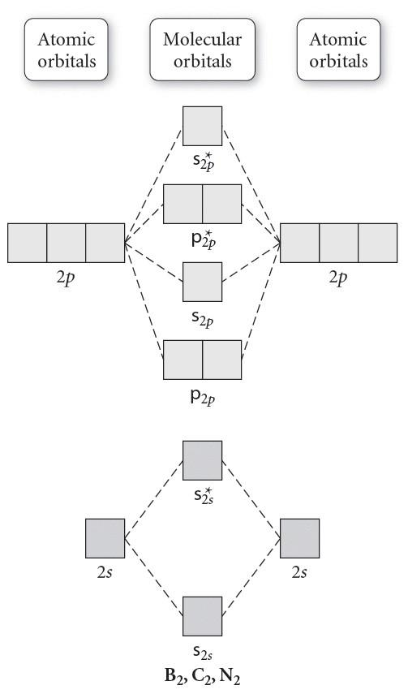
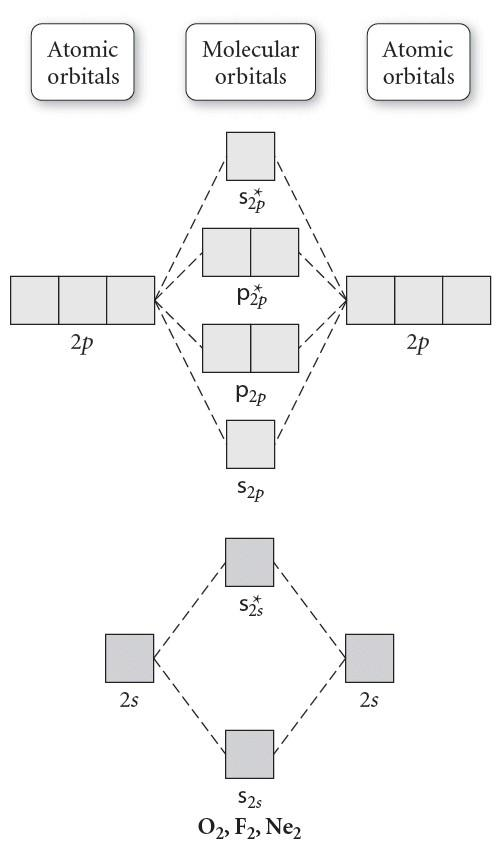

Press Ctrl-Z to toggle the answers & Ctrl-x to toggle the solutions.
Final Exam ((Ch E-9)
Mr. Alder
Jun 22, 2023
name: ______________________________________
1) Determine the density of an item that has a mass of 174.3 g and displaces 14.7 mL of fluid when submersed in a beaker.
A) 2560 g/mL
B) 160. g/mL
C) 11.9 g/mL*
D) 0.0843 g/mL
To determine the density of an item, we can use the formula:
Density = mass / volume
Given: Mass = 174.3 g Volume = 14.7 mL
*note that the volume of the item is equal to the volume of the fluid it displaces
Now, we can substitute the values into the density formula:
Density = 174.3 g / 14.7 mL
Let's perform the calculation:
Density ≈ 11.9 g/mL
2) How many significant figures are in the measurement, 4900.0 g?
A) 4
B) 5*
C) 3
D) 2
E) None of the above.
The measurement 4900.0 g has five significant figures. Significant figures are the digits in a number that contribute to its precision. When determining the number of significant figures, we consider the following:
- Non-zero digits (4 and 9) are always significant.
- Leading zeros are never significant. There are no leading zeros in this problem.
- Captured zeros, which are zeros between non-zero digits (1 and 0), are also significant. There are no captured zeros in this case.
- Trailing zeros (the final zeros) are significant only if they are after a decimal point. In this case, since there is a decimal point, the three trailing zeros are considered significant.
To summarize, captured zeros and non-zero digits are significant, leading zeros (zeros before the non-zero digits) are not significant, and trailing zeros (zeros after the non-zero digits) are significant if there is a decimal. Therefore, the measurement 4900.0 g has four significant figures.
3) Divide the following numbers and indicate the answer with correct number of significant figures.
\( \frac{187.7}{3.05} \)
A) 572
B) 61.5*
C) 61.54
D) 62
To divide the numbers 187.7 and 3.05, we perform the division as follows:
187.7 / 3.05
The result is 61.54.
Now, let's determine the correct number of significant figures in the answer.
187.7 has four significant figures, and 3.05 has three significant figures. When we divide numbers, the result should be rounded to the same number of significant figures as the number with the least number of significant figures, which is 3.05 in this case. Therefore, the quotient, 61.54, should be rounded to three significant figures.
Rounding 61.54 to three significant figures gives 61.5.
4) Add the following numbers and indicate the correct number of significant figures.
820.2 + 397.3
A) 1217.5*
B) 422.9
C) 1220
D) 1218
When you punch this into your calculator, the result is 1217.5.
Now, let's determine the correct number of significant figures.
820.2 has four significant figures, and 397.3 has four significant figures as well. When we add or subtract numbers, the result should have the same number of decimal places as the number with the least number of decimal places. Both 820.2 and 397.3 have 1 decimal place in this case. Therefore, the sum, 1217.5, should have 1 significant decimal place.
After rounding to 1 decimal place, the answer is: 1218
5) Which of the following describes the characteristics of a liquid
A) definite volume but no definite shape*
B) no definite volume or shape
C) no definite volume but a definite shape
D) definite volume and shape
6) Calculate the atomic mass of element "X," if it has 2 naturally occurring isotopes with the following masses and natural abundances.
X-107 107.47773 amu 71.253%
X-108 108.01034 amu 28.747%
A) 107.86 amu
B) 107.63 amu*
C) 161.48 amu
D) 107.29 amu
To calculate the atomic mass of element X, we need to consider the masses and natural abundances of its isotopes.
The atomic mass is calculated by multiplying the mass of each isotope by its natural abundance, summing up the results, and rounding to the appropriate number of decimal places.
Let's perform the calculation:
Isotope X-[107; 3]: Mass: 107.47773 amu Abundance: 71.253%
Isotope X-108: Mass: 108.01034 amu Abundance: 28.747%
Atomic mass = (107 amu * 0.71253) + (108.01034 amu * 0.28747) = 106.97958967 107.63 amu
7) Which of the following describes a compound?
A) two or more atoms covalently bonded together
B) two or more elements bonded to each other*
C) two or more elements that are not covalently or ionically bonded and have a uniform composition
D) an individual unit of an element
An atom: A fundamental unit of matter that consists of a nucleus (containing protons and neutrons) and electrons orbiting the nucleus.
A molecule: Two or more atoms covalently bonded together. It can be a compound or a diatomic molecule composed of the same type of atoms.
A compound: Two or more different elements chemically bonded together. Compounds have a fixed ratio of elements and can be represented by a chemical formula.
A heterogeneous mixture: Two or more elements or compounds that are not covalently or ionically bonded and do not have a uniform composition. In a heterogeneous mixture, the components are not evenly distributed, and their properties may vary within the mixture.
A homogeneous mixture: Two or more elements or compounds that are not covalently or ionically bonded and have a uniform composition. In a homogeneous mixture, the components are evenly distributed throughout, and the mixture appears uniform at the macroscopic level.
To summarize:
- Atom: Fundamental unit of matter.
- Molecule: Two or more atoms covalently bonded together.
- Compound: Two or more different elements chemically bonded together.
- Heterogeneous mixture: Components are not evenly distributed and do not have a uniform composition.
- Homogeneous mixture: Components are evenly distributed and have a uniform composition.
8) Which ion is represented by the following information?
p+ = 11, e- = 14
A) Na3-*
B) P3-
C) Mg3+
D) Na3+
This ion has 11 protons, and 14 electrons.
Since it has 11 protons, we can determine the element is Na by looking at the periodic table.
Charge = # protons - # electrons
Charge = 11 - 14 = 3-
Thus the ion can be represented with Na3-
9) Which of the following statements about subatomic particles are true.
A) charge = protons - neutrons
B) negatively charged ions have more protons than electrons
C) charge = protons - electrons*
D) positively charted ions (cations) have more electrons than protons
10) An element has three stable isotopes with masses of 27.253 amu, 29.254 amu, and 31.394 amu. The heavier two isotopes have an abundance of 17.1% (middle mass) and 3.00% (largest mass), respectively. What is the average atomic mass of the element?
A) 28.0 amu
B) 30.9 amu
C) 29.3 amu
D) 27.7 amu*
To calculate the average atomic mass of the element, we need to consider the masses of the isotopes and their respective abundances.
Given: Mass of first isotope (lightest) = 27.253 amu
Mass of second isotope (middle) = 29.254 amu
Mass of third isotope (heaviest) = 31.394 amu
Abundance of second isotope = 17.1%
Abundance of third isotope = 3.00%
To find the abundance of the lightest isotope, we subtract the abundances of the other two isotopes from 1: Abundance of lightest isotope = 1 - (abundance of second isotope + abundance of third isotope) = 1 - (0.171+ 0.0300) = 0.799
Now, let's calculate the average atomic mass.
Average atomic mass = (mass of first isotope * abundance of first isotope) + (mass of second isotope * abundance of second isotope) + (mass of third isotope * abundance of third isotope)
= (27.253 amu x 0.799) + (29.254 amu x 0.171) + (31.394 amu x 0.0300)
= 21.775) amu + 5.0024 amu + 0.94182 amu
= 27.719 amu
Rounded to the appropriate number of significant figures, the average atomic mass of the element is approximately 27.7 amu.
11) Calculate the frequency of a photon (in Hz) with a wavelength of 428.4 nm.
A) 7.00x1014 Hz*
B) 1.43x10-15 Hz
C) 0.000700 Hz
D) 4.64x10-19 Hz
To calculate the frequency of a photon using its wavelength, you can use the following equation:
c = λ * ν
Where: c is the speed of light in a vacuum (3.00 x 108 m/s) λ is the wavelength of the photon in meters ν is the frequency of the photon in Hz
First, we need to convert the given wavelength of 428.4 nm to meters:
λ = 428.4 nm * \( \frac{1 m}{10^9 nm} \) = 4.28x10-7 m
Now we can rearrange the equation to solve for the frequency:
ν = c / λ = (3.00 x 108 m/s) / (4.28x10-7 m)
ν ≈ 7.00x1014 Hz
12) For n = 2 (the 2nd electron shell), what are the possible subshells?
A) s‚ p and d
B) s
C) s and p*
D) s‚ p‚ d and f
For the principal quantum number (n) values of 1, 2, 3, and 4, the possible subshells are as follows:
n = 1: Only one subshell is possible, which is the s subshell.
n = 2: Two subshells are possible, which are the s and p subshells.
n = 3: Three subshells are possible, which are the s, p, and d subshells.
n = 4: Four subshells are possible, which are the s, p, d, and f subshells.
The subshells are named after the azimuthal quantum numbers (s, p, d, f) that represent the shape of the electron orbitals within each subshell.
13) Determine the energy change associated with the transition from n=5 to n=3 in the hydrogen atom.
A) -1.55x10-19 J*
B) 2.91x10-19 J
C) 1.55x10-19 J
D) -2.91x10-19 J
The energy change associated with the transition between energy levels in a hydrogen atom can be calculated using the formula:
ΔE = - RH * \( (\frac{1}{n_{final}^2} - \frac{1}{n_{initial}^2}) \)
where RH is the Rydberg constant for hydrogen (2.18 × 10-18 J), nfinal is the final energy level, and ninitial is the initial energy level.
For this specific transition from n=3 to n=5, we can substitute the values into the formula:
ΔE = - RH * \( (\frac{1}{3^2} - \frac{1}{5^2}) \) = -(2.18 × 10-18 J) * \( (\frac{1}{3^2} - \frac{1}{5^2}) \) ≈ -1.55x10-19 J
14) How many orbitals are present in subshell d (l = 2)?
A) 5*
B) 4
C) 10
D) 2
The number of orbitals in each subshell can be determined using the following pattern:
- Subshell s (l = 0): 1 orbital
- Subshell p (l = 1): 3 orbitals
- Subshell d (l = 2): 5 orbitals
- Subshell f (l = 3): 7 orbitals
15) Which of the following sets of quantum numbers is possible?
A) (3, 3, +3, -\( \frac{1}{2} \))
B) (3, 2, +2, +\( \frac{1}{2} \))*
C) (5, 4, -5, +\( \frac{1}{2} \))
D) (3, 1, +1, +1)
For a set of quantum numbers to be valid, the following relationships must be satisfied:
- The principal quantum number (n) must be a positive integer (1, 2, 3, ...).
- The azimuthal quantum number (ℓ) must be an integer ranging from 0 to (n-1).
- The magnetic quantum number (mℓ) must be an integer ranging from -ℓ to +ℓ.
- The spin quantum number (ms) must be either +1/2 or -1/2.
Let's evaluate the given sets of quantum numbers:
(3, 2, +2, +\( \frac{1}{2} \))
-
- n = 3 (valid as it is a positive integer).
- ℓ = 2 (valid as it is within the range of 0 to (n-1)).
- mℓ = +2 (valid as it is within the range of -ℓ to +ℓ).
- ms = +\( \frac{1}{2} \) (valid as it is either +1/2 or -1/2).
- Therefore, this set of quantum numbers is valid.
(3, 3, +3, -
\( \frac{1}{2} \))
-
- n = 3 (valid as it is a positive integer).
- ℓ = 3 (invalid as it is not within the range of 0 to (n-1)).
- mℓ = +3 (valid as it is within the range of -ℓ to +ℓ).
- ms = -\( \frac{1}{2} \) (valid as it is either +1/2 or -1/2).
- Therefore, this set of quantum numbers is not valid due to the value for ℓ.
(5, 4, -5, +
\( \frac{1}{2} \))
-
- n = 5 (valid as it is a positive integer).
- ℓ = 4 (valid as it is within the range of 0 to (n-1)).
- mℓ = -5 (invalid as it must be within the range of -ℓ to +ℓ).
- ms = +\( \frac{1}{2} \)(valid as it is either +1/2 or -1/2).
- Therefore, this set of quantum numbers is not valid due to the value of mℓ being outside the allowed range.
(3, 1, +1, + 1)
-
- n = 3 (valid as it is a positive integer).
- ℓ = 1 (valid as it is within the range of 0 to (n-1)).
- mℓ = +1 (valid as it is within the range of -ℓ to +ℓ).
- ms = +1 (invalid as it must be either +1/2 or -1/2).
- Therefore, this set of quantum numbers is not valid due to the incorrect value for ms.
Based on the numerical relationships between the quantum numbers, only the set (3, 2, +2, +\( \frac{1}{2} \)) satisfies the required conditions and is therefore valid.
16) Which atom or ion has the electron configuration below?
[Ne] 3s2 3p6
A) K2+
B) In-
C) Rb+
D) K+*
K+ has the electron configuration of [Ne] 3s2 3p6. The easiest way to arrive at this answer is by counting electrons. Neon has 10 electrons and 3s2 3p6 adds another 8 electrons. So the answer is K+ because K+ has 18 electrons.
17) Which of the following has the largest atomic radius; Ar, Kr, Xe, or Rn?
A) Rn*
B) Xe
C) Kr
D) Ar
Rn has the largest atomic radius. The major trend for atomic radius is that atomic radius increases as you go down and to the left on the periodic table.
18) How many valence electrons does Cr have?
A) 24
B) 2*
C) 6
D) 18
Cr has 2 valence electrons. You can tell because Cr only has 2 electrons in its outer shell.
19) Predict the charge that fluorine will take as an ion.
A) -2
B) +3
C) -1*
D) -3
The charges that elements can form as ions depend on their position in the periodic table and their tendency to gain or lose electrons to achieve a stable electron configuration.
Sodium (Na) tends to lose one electron to achieve a stable electron configuration, forming a +1 ion (Na+). Magnesium (Mg) tends to lose two electrons, forming a +2 ion (Mg2+). Aluminum (Al) also tends to lose three electrons, forming a +3 ion (Al3+). Nitrogen (N) tends to gain three electrons to achieve a stable electron configuration, forming a -3 ion (N3-). Oxygen (O) tends to gain two electrons, forming a -2 ion (O2-). Fluorine (F) tends to gain one electron, forming a -1 ion (F-).
So, the predicted charges for these elements as ions are: Sodium: +1 Magnesium: +2 Aluminum: +3 Nitrogen: -3 Oxygen: -2 Fluorine: -1
20) Which of the following represents a violation of the Pauli exclusion principle?
A) 
B) 
C) 
D) *
Ground state:
Violation of the Pauli exclusion principle:
Violation of Hund's rule:
Excited state: 
-
Ground State: The ground state refers to the lowest energy state of an atom or a molecule. In the ground state, electrons occupy the available orbitals starting from the lowest energy level (n = 1) and follow the rules of the Pauli Exclusion Principle and Hund's Rule.
-
Violation of the Pauli Exclusion Principle: The Pauli Exclusion Principle states that no two electrons in an atom can have the same set of quantum numbers. If there is a violation of this principle, it means that two or more electrons in an atom or a system have the same quantum numbers, which is not allowed.
-
Violation of Hund's Rule: Hund's Rule states that when electrons occupy degenerate orbitals (orbitals with the same energy), they tend to occupy separate orbitals with parallel spins before pairing up with opposite spins. A violation of Hund's Rule occurs when electrons in degenerate orbitals pair up with opposite spins before all the orbitals are singly occupied.
-
Excited State: An excited state refers to any energy state of an atom or a molecule that is higher in energy than the ground state. In an excited state, one or more electrons have absorbed energy and moved to higher energy levels or different orbitals. Electrons in excited states have configurations that deviate from the ground state electron configuration. Excited states are temporary and unstable, and electrons tend to return to lower energy levels or the ground state by releasing energy in the form of photons.
21) Calculate the formula mass for Sn(ClO3)4.
A) 452.5 amu*
B) 808.6 amu
C) 324.5 amu
D) 202.2 amu
To calculate the formula mass for Sn(ClO3)4, take the number of each element from the periodic table and multiply it by the formula mass of the element, then sum all the formula masses from each element.
Sn: 118.71 amu x 1 = 118.71 amu
Cl: 35.45 amu x 4 = 141.8 amu
O: 16.00 amu x 10 = 200 amu
Total: 452.5 amu
22) What is the empirical formula for Hg2(NO3)2?
A) Hg2(NO3)2
B) HgNO3*
C) Hg(NO)3
D) Hg2NO6
An empirical formula represents the simplest ratio of elements present in a compound. It shows the relative number of atoms of each element in a compound without specifying the actual number of atoms. To get the empirical formula you need to divide the subscripts in the equation (Hg2(NO3)2) by their greatest common divisor. In this case 2 and 2‚ 6‚ 12 and 6 are divisible by 2, which gives HgNO3 as the empirical formula.
23) Give the formula for Nickel (III) oxide
A) N2O3
B) Ni3O2
C) NiO
D) Ni2O3*
The Roman numeral (III) tells us that the charge on Nickel is +3. From the periodic table we can know that the charge on oxide is -2. The lowest common multiple of 3 and 2 is 6, so the number of Nickel ions will need to be 2, and the number of oxide ions will need to be 3. This will give us a formula of Ni2O3.
24) An unknown compound contains only carbon and hydrogen. When it undergoes combustion analysis, it produces 50.424 g of CO2 and 27.532 g of H2O. Given that it has a molar mass of 44.1 g/mol, what is the molecular formula?
A) C3H8*
B) C3H10
C) C3H6
D) C2H4
Step 1: Convert the grams of CO2 and H2O to moles of C and O.
50.4 g CO2 x \( \frac{1 mol CO_2}{44.01 g CO_2} \)x \( \frac{1 mol C}{1 mol CO_2} \) = 1.15 mol C
27.5 g H2O x \( \frac{1 mol H_2O}{18.016 g H_2O} \) x \( \frac{2 mol H}{1 mol H_2O} \) = 3.06 mol H
Step 2: Divide both mole amounts by the lower of the two numbers.
1.15 mol C/1.15 = 1.00 mol C
3.06 mol H/1.15 = 2.67 mol H
Step 3: Get the smallest whole number ratio of each mole amount to get the empirical formula.
Step 4: Calculate the molar mass of the empirical and dived the molar mass of the compound by the molar mass of the empirical formula. This number will tell you what you need to multiply the subscripts in the empirical formula by to get the molecular formula.
Thus the molecular formula is: C3H8
25) Determine the name for FePO4·4H2O
A) Iron (III) phosphate quadhydrate
B) Iron phosphate tetrahydrate
C) Iron (III) phosphate tetrahydrate*
D) Iron (III) phosphate trihydrate
FePO4·4H2O is an ionic compound and a hydrate. To name the ionic compound portion give the name of the cation followed by the name of the anion. In this case that would be iron (III) phosphate. The hydrate portion of the formula is named based on the number of water molecules. Since this hydrate has 4 water molecules in its formula the prefix 'tetra-' is used before the word 'hydrate'. Thus the correct name is iron (III) phosphate tetrahydrate.
26) Which compound has the smallest ionic character in the gas phase?
A) Cl2*
B) HCl
C) LiF
D) CO
The compound with the smallest ionic character will be the one with the smallest dipole.
The smallest dipole moment will be between the two elements that have the smallest difference in electronegativity. Generally speaking the elements with the smallest difference in electronegativity will be closest on the periodic table. However, you should remember that hydrogen has an electronegativity that is around that of metalloids. In other words, it is low for a nonmetal.
27) Which of the following compounds is nonpolar?
A) H2O
B) SiF4*
C) CHF3
D) NH3
SiF4 is tetrahedral shaped, which is a symmetrical shape. That means the fluorines electronegativities will balance out and SiF4 will be nonpolar.
28) Which of the following shows the best Lewis structure for XeF2?
A) *
B) 
C) 
D) 
Xe has 8 valence electrons and F has 7 valence electrons. Xe (being below the 2nd period) can get more than an octet, but F needs an octet. The formal charges need to be as close to zero as possible. is the only structure with the correct number of electrons (8 + 7 + 7 = 22) where the formal charges on all elements is zero.
29) What is the molecular shape of H2O?
A) Trigonal pyramidal
B) Bent*
C) Trigonal planar
D) Tetrahedral
Since the Lewis structure of H2O has 4 electron domains, 2 of which are lone pairs, the molecular shape of H2O is bent.
30) What is the VSEPR shape (electron domain geometry) of SF4?
A) Tetrahedral
B) Trigonal planar
C) Octahedral
D) Trigonal bipyramidal*
Since the Lewis structure of SF4 has 5 electron domains, the VSEPR shape (electron domain geometry) of SF4 is trigonal bipyramidal.
31) Use the molecular orbital diagram shown below to determine which of the following are the paramagnetic (there may be more than one answer).

A) NC*
B) C2+*
C) NC-
D) C2
Step 1: Count the number of valence electrons in the molecule.
C2+: 7 valence electrons
C2: 8 valence electrons
NC: 9 valence electrons
NC-: 10 valence electrons
Step 2: Fill in the molecular orbital diagram from the bottom up, but make sure to follow Hund's rule (one electron in each orbital in degenerate orbitals before a second with an opposing spin) when filling pi molecular orbitals.
Step 3: Determine if there are any unpaired electrons in the molecular orbital diagram.
C2+: 7 valence electrons, and odd numbers will always have unpaired electrons = paramagnetic
C2: 8 valence electrons, the pi 2p orbitals get filled, leaving no unpaired electrons = diamagnetic
NC: 9 valence electrons, and odd numbers will always have unpaired electrons = paramagnetic
NC-: 10 valence electrons, the last 2 electrons go into sigma 2p orbital filling it, which means there are no unpaired electrons = diamagnetic
32) Use the molecular orbital diagram shown below to determine which of the following are the diamagnetic (there may be more than one answer).

A) OF-*
B) O2
C) F2-
D) OF
Step 1: Count the number of valence electrons in the molecule.
O2: 12 valence electrons
OF: 13 valence electrons
OF-: 14 valence electrons
F2-: 15 valence electrons
Step 2: Fill in the molecular orbital diagram from the bottom up, but make sure to follow Hund's rule (one electron in each orbital in degenerate orbitals before a second with an opposing spin) when filling pi molecular orbitals.
Step 3: Determine if there are any unpaired electrons in the molecular orbital diagram.
O2: 12 valence electrons, the last 2 electrons go into pi 2p orbitals, which means there are 2 unpaired electrons = paramagnetic
OF: 13 valence electrons, and odd numbers will always have unpaired electrons = paramagnetic
OF-: 14 valence electrons, the pi 2p orbitals get filled, leaving no unpaired electrons = diamagnetic
F2-: 15 valence electrons, and odd numbers will always have unpaired electrons = paramagnetic
33) Identify the number of electron groups (electron domains) around a molecule with sp3 hybridization.
A) 5
B) 2
C) 4*
D) 6
| # Electron domains |
Hybridization |
| 2 |
sp |
| 3 |
sp2 |
| 4 |
sp3 |
| 5 |
sp3d |
| 6 |
sp3d2 |
34) What is the hybridization on the central atom for HSiN?
A) sp2
B) sp3d
C) sp*
D) sp3
Step 1: Draw the Lewis Structure.
Step 2: Count the number of electron domains: the number of lone pairs and number of atoms bonded to Si.
You should get 2 electron domains.
2 electron domains corresponds to sp hybridization.
| # Electron domains |
Hybridization |
| 2 |
sp |
| 3 |
sp2 |
| 4 |
sp3 |
| 5 |
sp3d |
| 6 |
sp3d2 |
35) Give the electron domain geometry for PF5
A) Octahedral
B) T-shape
C) Trigonal bipyramid*
D) Trigonal planar
Step 1: Draw the Lewis Structure.
Step 2: Count the number of electron domains: the number of lone pairs and number of atoms bonded to P.
You should get 5 electron domains.
5 electron domains corresponds to a trigonal bipyramid electron domain geometry.
36) Which of the following is a physical change?
A) Ice melting*
B) Metal rusting
C) Lighting a match
D) None of the above.
Ice melting does not change the substance chemically, therefore it is a physical change. State changes such as melting, freezing, boiling, condensing, and dissolving are physical changes. Deforming or breaking an object is a physical change.
Lighting a match, and metal rusting involve creating new substances, so they are chemical changes. "Burning", "lighting", "cooking", "baking", and "reacting" are all key words that indicate a chemical change.
37) How many moles of FeBr
3 can be formed from 2.69 moles of KBr? Assume an excess of Fe(OH)
3.
3 KBr + Fe(OH)3 ➞ 3 KOH + FeBr3
A) 0.897 moles*
B) 8.07 moles
C) 265 moles
D) 2.69 moles
From the balanced chemical equation: 3 KBr + Fe(OH)3 ➞ 3 KOH + FeBr3
We can see that the stoichiometric ratio between KBr and FeBr3 is 3:1. This means that for every 3 moles of KBr, we can expect 1 mole of FeBr3 to be formed.
Given that we have 2.69 moles of KBr, we can calculate the moles of FeBr3 using the stoichiometric ratio:
Moles of FeBr3 = (2.69 moles of KBr) / (3 moles of KBr per 1 mole of FeBr3) Moles of FeBr3 = 2.69 moles / 3 Moles of FeBr3 = 0.897 moles
38) How many molecules of water can be produced when 18.7 g of CH
4 reacts with excess oxygen?
CH4 + 2 O2 ➞ CO2 + 2 H2O
A) 3.12x1023 molecules
B) 42.0 molecules
C) 3.51x1023 molecules
D) 1.40x1024 molecules*
First, calculate the moles of CH4 using its molar mass:
Molar mass of CH4 = 12.01 g/mol + 4(1.01 g/mol) = 16.05 g/mol
Moles of CH4 = Mass of CH4 / Molar mass of CH4
Moles of CH4 = 18.7 g / 16.05 g/mol Moles of CH4 ≈ 1.17 moles
From the balanced equation: CH4 + 2 O2 ➞ CO2 + 2 H2O
The stoichiometric ratio between CH4 and H2O is 1:2. This means that 1 mole of CH4 will produce 2 moles of H2O.
Moles of H2O = 2 × Moles of CH4
Moles of H2O = 2 × 1.17 moles
Moles of H2O ≈ 2.33 moles
Finally, convert the moles of water to molecules using Avogadro's number (6.022 × 1023 molecules/mol):
Number of water molecules = Moles of H2O × Avogadro's number Number of water molecules
= 2.33 moles × (6.022 × 1023 molecules/mol)
Number of water molecules ≈ 1.40x1024 molecules
39) What is the theoretical yield, in moles of CO
2, from the reaction of 15.8 moles of C
2H
6 with 30.6 moles of O
2?
2 C2H6 + 7 O2 ➞ 4 CO2 + 6 H2O
A) 53.6 moles
B) 17.5 moles*
C) 31.6 moles
D) 9.03 moles
To determine the theoretical yield of CO2, we need to compare the moles of C2H6 and O2 and their respective stoichiometric coefficients in the balanced equation. The reactant that produces the least amount of CO2 based on the stoichiometry will limit the amount of CO2 produced.
From the balanced equation: 2 C2H6 + 7 O2 ➞ 4 CO2 + 6 H2O
Moles of C2H6 = 15.8 moles
Moles of O2 = 30.6 moles
To determine the limiting reactant, we compare the the amounts of product we can produce from each reactant.
The stoichiometric ratio between C2H6 and CO2 is 2:4. This means that 2 moles of C2H6 react to produce 4 moles of CO2.
The theoretical yield of CO2 based on the C2H6 being the limiting reagent: Moles of limiting reactant (C2H6) × Stoichiometric coefficient of CO2 = 15.8 moles × (4 mol CO2 / 2 mol C2H6) = 31.6 moles CO2
The stoichiometric ratio between O2 and CO2 is 7:4. This means that 7 moles of O2 react to produce 4 moles of CO2.
The theoretical yield of CO2 based on the O2 being the limiting reagent: Moles of limiting reactant (O2) × Stoichiometric coefficient of CO2 = 30.6 moles × (4 mol CO2 / 7 mol O2) = 17.5 moles CO2
Since assuming O2 is the limiting reagent produces a lower yield, O2 is actually our limiting reactant.
Therefore, the theoretical yield of CO2 from the given reaction is approximately 17.5 moles CO2.
40) Balance the following equation.
________ C7H20 + ________ O2 → ________ H2O + ________ CO2
Step 1) First balance the hydrogen on each sides by finding the least common multiple of 20 and 2.
Step 2) Next balance the carbon on each side.
Step 3) Finally balance the oxygen last (because it exists in its elemental form unbound to other atoms). If needed, first double all the other coefficients.
41) How many grams of sucrose (C12H22O11, molar mass = 342.30 g/mol) are contained 400 mL of a 0.344 M glucose solution?
A) 47.1 g*
B) 2.94 g
C) 0.000402 g
D) 8.29x1022 g
To calculate the mass of sucrose in a given solution, we need to know the volume of the solution and the molarity of the glucose solution.
Given:
Volume of solution = 400 mL
Molarity of glucose solution = 0.344 M
First, we need to convert the volume from milliliters to liters: Volume of solution = 400 mL x (1L / 1000 mL) = 0.0344 L
Next, we can calculate the number of moles of glucose using the formula: Moles of glucose = Liters of solution × Molarity
Moles of glucose = 0.0344 L × 0.344 M = 0.138 moles
Now, we can use the molar mass of sucrose (342.30 g/mol) to calculate the mass of sucrose: Mass of sucrose = Moles of glucose × Molar mass of sucrose
Mass of sucrose = 0.138 moles × 342.30 g/mol = 47.1 grams
42) What is the oxidation state of P in PO42-?
A) +2
B) +4
C) +8
D) +6*
To determine the oxidation state of phosphorus in PO42-, we consider the overall charge of the ion and the known oxidation states of other elements involved.
In the phosphate ion (PO42-), the oxygen atoms have a known oxidation state of -2. The overall charge of the ion is -2 as well. Since the sum of the oxidation states in an ion must equal the overall charge, we can calculate the oxidation state of phosphorous.
Let's assume the oxidation state of phosphorous as x. We have four oxygen atoms, each with an oxidation state of -2. Therefore:
(x) + 4(-2) = -2
Simplifying the equation:
x - 8 = -2
x = +6
43) All of the following compounds are soluble except which one?
A) FeSO4
B) BaI2
C) Li2CO3
D) BaSO4*
To answer this question, reference your solubility rules.
Sulfides are generally soluble, however Sr2+, Ba2+, Hg22+, and Pb2+ sulfides are insoluble.
44) How many molecules of glucose (C6H12O6, molar mass = 180.16 g/mol) are contained 800 mL of a 0.308 M glucose solution?
A) 1.48x1023 molecules*
B) 1.56x1024 molecules
C) 1.48 molecules
D) 44.4 molecules
To calculate the number of molecules of glucose in a given solution, we need to know the volume of the solution and the molarity of the glucose solution.
Given: Volume of solution = 800 mL
Molarity of glucose solution = 0.308 M
First, we need to convert the volume from milliliters to liters:
Volume of solution = 800 mL x (1L / 1000 m)L =
Next, we can calculate the number of moles of glucose using the formula: Moles of glucose = Liters of solution × Molarity
Moles of glucose = 0.800 L × 0.308 M = 0.246 moles
Now, we can use Avogadro's number (6.022 × 1023) to convert moles to molecules: Number of molecules of glucose = Moles of glucose × Avogadro's number
Number of molecules of glucose = 0.246 moles × (6.022 × 1023 molecules/mol) = 1.48x1023 molecules
45) What would be the molarity of a solution formed by dissolving 24.6 g of KBr in enough water to yield 300.0 mL of solution?
A) 0.000689 M
B) 1.45x104 M
C) 14.5 M
D) 0.689 M*
To calculate the molarity of a solution, we need to determine the number of moles of solute (KBr) and then divide it by the volume of the solution in liters.
First, let's calculate the number of moles of KBr:
Molar mass of KBr = 39.10 g/mol (atomic mass of K) + 79.90 g/mol (atomic mass of Br) = 119.00 g/mol
Moles of KBr = Mass of KBr / Molar mass of KBr = 24.6 g / 119.00 g/mol = 0.207 moles
Next, we convert the volume of the solution from milliliters to liters: Volume of solution = 300.0 mL x (1 L / 1000 mL) = 0.300 L
Finally, we calculate the molarity using the formula: Molarity (M) = Moles of solute / Volume of solution (in liters) Molarity = 0.207 moles / 0.300 L = 0.689 M
46) What is the final temperature of a copper sample (mass = 340. g) that has a starting temperature of 390 K but loses 3.75 kJ of heat. The specific heat capacity of copper is 0.385 J/g°C.
A) 361 K*
B) 393 K
C) 419 K
D) 387 K
The specific heat formula is q = mcsΔT, (heat = mass x specific heat capacity x change in temperature), or q = mcs(Tf - Ti).
In this case we're solving for final temperature. Dividing both sides by mcs gives:
q/(mcs) = Tf - Ti, adding Ti to both sides gives:
Ti + q/(mcs) = Tf
Given:
q = -3.75 Kj, converted to J: -3.75 kJ x (1000 J / 1 kJ ) = -3750 J
mass = 340. g
cs = 0.385 J/g°C
Ti = 390 K
Tf = Ti + q/(mcs) = 390 K + (-3750 J)/(340. x 0.385 J/g°C) = 361 K
47) How much energy is
required to decompose 766 g of PCl
3, according to the reaction below? The molar mass of PCl
3 is 137.32 g/mol and may be useful.
4 PCl3(g) → P4(s) + 6 Cl2(g), ΔH°rxn = +1207 kJ
A) 2.31x105 kJ
B) 1680 kJ*
C) 6730 kJ
D) 4.14x104 kJ
The chemical equation tells us +1207 kJ are required to decompose 4 moles of PCl3. So once we have the moles, we can use that as a conversion factor to calculate the kJ required.
766 g PCl3 x (1 mol PCl3 / 137.32 g PCl3) x (1207 kJ / 4 mol PCl3) = 1680 kJ
48) Which of the following is an endothermic process?
A) You mix an acid and a base and the solution becomes hot
B) Rain freezing and becoming snow
C) Water boiling*
D) Water vapor condensing
Water boiling requires an input of energy, thus it is an endothermic process.
49) A 3.86 g sample of aniline (C6H5NH2, molar mass = 93.13 g/mol) was combusted in a coffee cup (constant pressure) calorimeter with a heat capacity of 5.20 kJ/°C. If the temperature rose from 21.5°C to 70.6°C, determine the value of ΔH°combustion for aniline (for this problem the water is considered part of the calorimeter, so consider all the heat produced as being absorbed by the calorimeter).
A) 6160 kJ/mol
B) 8860 kJ/mol
C) -6160 kJ/mol*
D) -8860 kJ/mol
The heat (enthalpy) of combustion is equal to the heat given off per mol.
ΔH°combustion = qrxn/n
The heat given off is equal, but opposite to the heat absorbed by the calorimeter (remember the water is considered part of the calorimeter in this problem).
qrxn = -qcal
qcal = CΔT
Lets solve for the heat absorbed by the calorimeter.
qcal = CΔT = 5.20 kJ/°C x (70.6°C - 21.5°C) = 255 Kj
Now the heat given off by the reaction.
qrxn = -qcal = -255 kJ
Next lets solve for the moles of reactant (n).
3.86 g x (1 mol / 93.13 g) = 0.0414 mol
Finally the heat (enthalpy) of combustion.
ΔH°combustion = qrxn/n = -255 kJ / 0.0414 mol = -6160 kJ/mol
50) Which of the following would have the lowest lattice energy?
A) Na2O*
B) BeO
C) CaO
D) MgO
There are two parts that are involved in lattice energy. One is the charge on the ions (this is the bigger priority), and the other is the distance between the ions. This is only testing on knowing that the larger the charge on the ions, the larger the lattice energy. Since Na has the lowest charge, Na2O will have the lowest lattice energy.